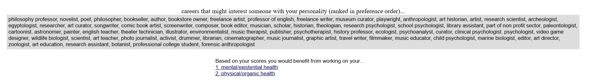
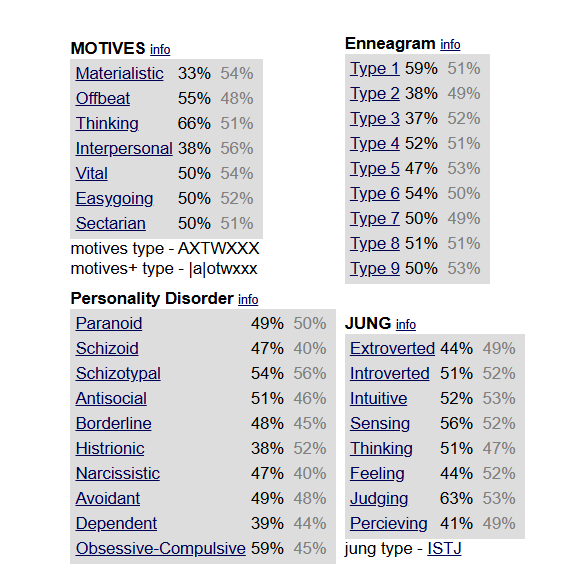

Strongest Trait and Emotion
My ability to think critically has always been my biggest suit as a student of computer networking and security. This quality enables me to deconstruct difficult issues into digestible chunks, which is crucial when dealing with challenging cybersecurity issues and sophisticated network settings. I can approach tasks and projects systematically because to my analytical abilities, which guarantee that I comprehend each part of the system and how it works. In addition to helping me succeed academically, this rigorous approach has won me the respect and admiration of my instructors and classmates.
Curiosity is one of the emotions that propels my academic success; I have an unquenchable desire to learn how things work, which feeds my passion for learning; it encourages me to learn more about subjects, do my own research, and keep up with the most recent developments in the field; it drives me to attend workshops, take part in online forums, and interact with the larger cybersecurity community; and it makes sure that I am always at the forefront of my field, armed with the newest information and abilities.
My Hero
One of the most well-known and respected names in cybersecurity is Bruce Schneier. He has made important contributions to cryptography and security engineering as a professor, author, and security scientist. Schneier is a great resource for experts and the general public alike because of his reputation for being able to clearly and concisely explain complicated security principles.
His well-known statement is, "Security is a process, not a product." This quotation highlights that maintaining security requires constant work and attention to detail rather than depending just on one technology or solution. Because Bruce Schneier's work exemplifies the values of creativity, commitment, and pragmatism in cybersecurity, I chose him as my hero. His methodical and all-encompassing approach to security emphasizes practical applications and the role of people in security procedures. Schneier's efforts have influenced contemporary cybersecurity tactics, and his observations still have an impact on the sector today.
Read More about SchneierPersonality Tool Results
 I disagree with those who think that tests such as these can provide insights. In my situation, I don't believe the test accurately reflected who I am. It's critical to understand that no test can adequately capture the subtleties and complexity of a person. The results can be affected by a variety of factors, including context, emotion, and even the particular questions posed. As a result, even while these assessments could offer a broad picture, they frequently fall short in terms of precision and depth, making it difficult to accurately represent a person's identity and abilities.